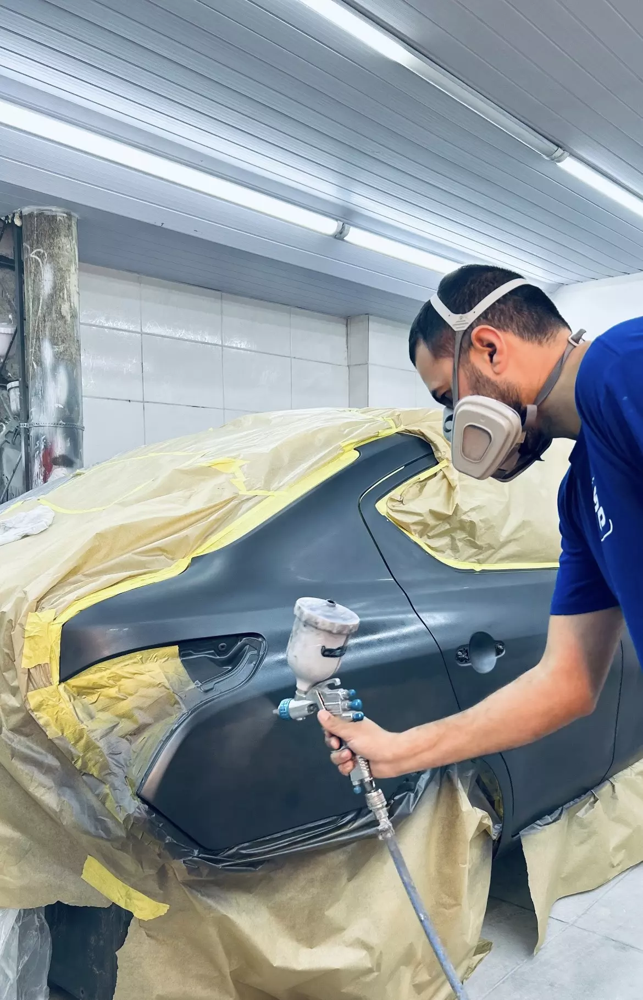
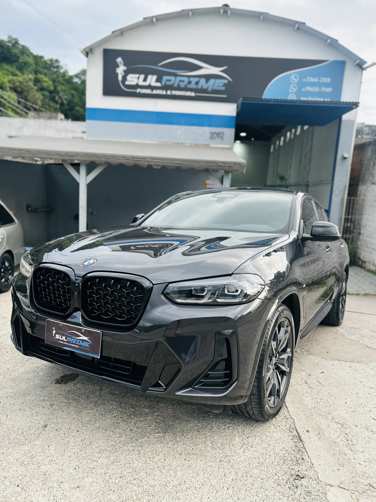
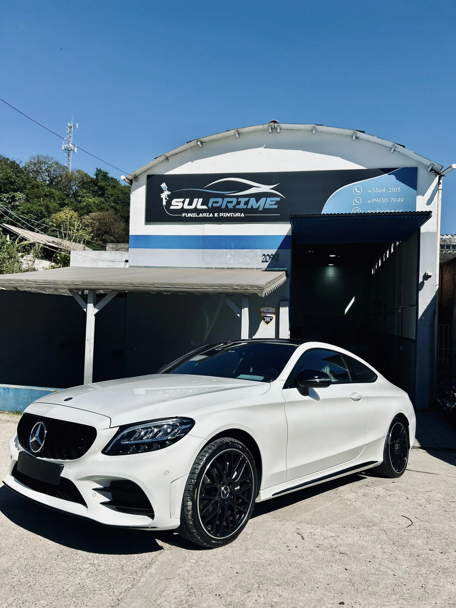
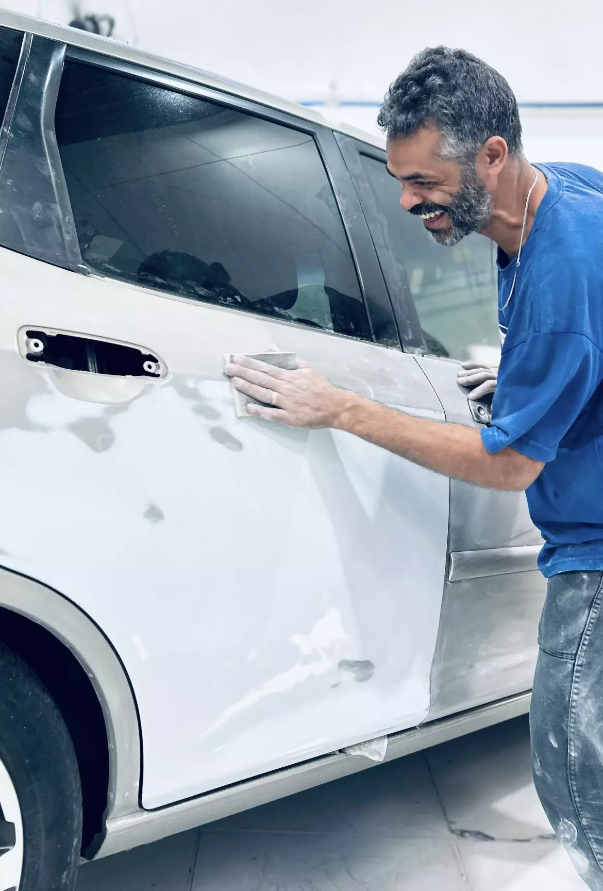
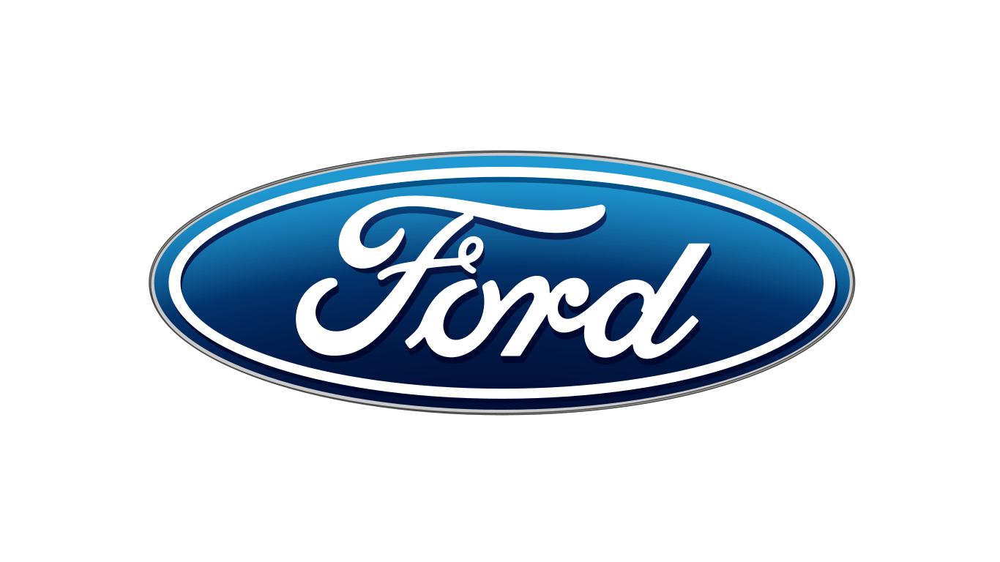
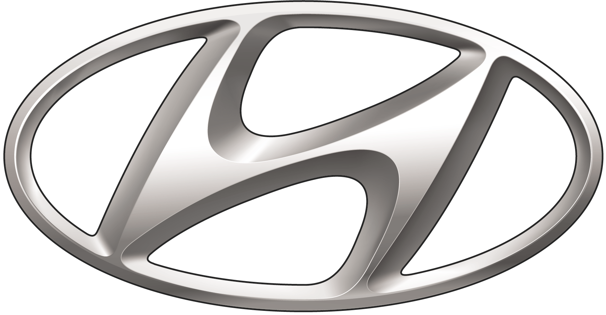

Tudo que seu veículo precisa, com a precisão que ele merece
Funilaria Artesanal
Reparo manual com ferramentas de precisão. Nada de massa em excesso, entregamos a estrutura como se fosse original de fábrica.
Recuperação de Para-choque
Reparo de danos, deformações, trincas e imperfeições no para-choque, com acabamento alinhado à estética original do veículo.
Vitrificação Profissional
Proteção cerâmica de longa durabilidade. Profundidade de brilho e resistência que nenhum polimento comum entrega.
Martelinho de Ouro
Para amassados sem dano na pintura. Resultado impecável, sem precisar repintar nada.
Polimento e Correção de Pintura
Correção de imperfeições, riscos, manchas e desgastes na pintura, devolvendo brilho, uniformidade e acabamento ao veículo.
Pintura de rodas
A pintura de rodas automotivas serve tanto para personalizar o visual do veículo quanto para corrigir arranhões e proteger contra a corrosão. O processo envolve lixamento, limpeza profunda, isolamento do pneu e aplicação de técnicas como pintura eletrostática ou diamantagem.
Alinhamento Cyborg
Correção de deformações causadas por impacto, permitindo o encaixe correto de portas, capô ou porta-malas, além de restabelecer os parâmetros para o alinhamento de suspensão.
Os padrões que você exige. A entrega que você merece.
Materiais de Alta Performance
Trabalhamos apenas com vernizes e tintas de alta durabilidade. Sem produtos que amarelam em 6 meses, sem atalhos que comprometem o resultado.

Prazo Combinado. Entrega Garantida.
Combinamos uma data e entregamos. Sem "acabou o verniz", sem "a cabine está ocupada". Seu carro não é pretexto para improviso.



Um padrão que Florianópolis ainda não tinha visto.
Criamos a Sul Prime com um único propósito: ser o lugar de confiança que o dono de um carro merece. Um ambiente organizado, com profissionais que falam sua língua e que entendem que o seu carro é uma extensão de tudo que você construiu.
Aqui, cada veículo é tratado com o mesmo cuidado que teríamos com o nosso próprio. Não existe "bom o suficiente". Existe certo, ou a gente refaz.
Não empurramos serviços desnecessários. Se o martelinho de ouro resolve, usamos o martelinho de ouro. Se a peça pode ser recuperada, recuperamos.
Transparência absoluta:
você recebe orçamento detalhado, sem surpresas no valor final.
Explicações simples:
explicamos de forma clara para que você tome decisões conscientes.
O que dizem sobre nós
Trabalhamos com todas as marcas do mercado
 Toyota
Toyota Honda
Honda Volkswagen
Volkswagen Audi
Audi
Ford Chevrolet
Chevrolet Fiat
Fiat
Hyundai